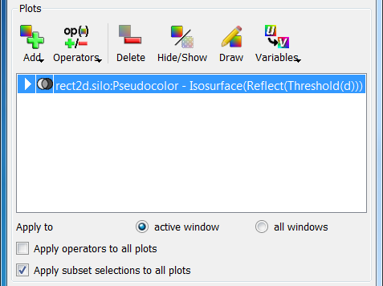
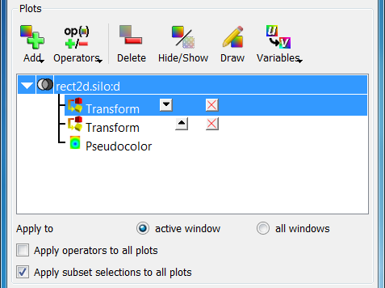

4.1. Working with Operators¶
An operator is a filter applied to a database variable before the compute engine uses that variable to generate a plot. VisIt provides several standard operator types that allow various operations to be performed on plot data. The standard operators perform data restriction operations like planar slicing, spherical slicing, and thresholding, as well as more sophisticated operations like peeling off mesh layers. All of VisIt’s operators are plugins and new operators can be written to extend VisIt in new ways. See the wiki for more details on creating new operator plugins or send an e-mail inquiry to visit-users@elist.ornl.gov.
4.1.1. Managing operators¶
When an operator is applied to a plot, it modifies the data that the plot uses to generate a visualization. Any number of operators can be applied to a plot. Each operator added to a plot restricts or modifies the data that is supplied to the plot. Very sophisticated visualizations can be created by using a series of operators.
The controls for the operators are found in the same location as the plot controls. The plot list, which displays the list of plots found in the current visualization window, also displays the operators applied to each plot. Each entry in the plot list displays the database name (when there is more than one open source), the plot type, the variable, and all operators that are applied to the plot. When an operator is applied to a plot, the name of the operator is inserted in front of the plot variable. If multiple operators are applied to a plot, the most recently added operator appears first when reading left to right while the operator that was applied first appears just to the left of the variable name. Plot list entries can also be expanded to allow the user to add, remove, reorder, and change the attributes of operators.

Fig. 4.1 The plots area
4.1.1.1. Adding an operator¶
Operators are added by selecting an operator from the Operators menu, shown in Figure 4.2. If an operator listed in this chapter is not listed in the Operators menu then the operator might not be loaded by default. To enable additional operators, use the Plugin Manager Window. When an operator is added, it applies the operator to the selected plots in the plot list unless the Apply operators to all plots check box is checked, in which case, the selected operator is applied to all plots in the plot list. By default, operators are applied to all plots in the plot list.
Fig. 4.2 The operators menu
When an operator is added to a plot, the name of the operator appears in the plot list entry to the left of the variable or any previously applied operator. When an operator is added to an already generated plot, the plot is reset back to the new state to allow the user an opportunity to set the operator’s attributes before the plot is regenerated. To regenerate the plot with the newly added operator, press the Draw button. It is also possible to apply an operator by clicking an operator attributes window’s Apply button. When this occurs, a dialog window appears asking the user if the operator should be applied to the selected plots (see Figure 4.3).

Fig. 4.3 The add operator dialog
4.1.1.2. Expanding plots¶
Plot list entries are normally collapsed by default with the operators applied to the plots shown in the plot list as a series of nested operators, which finally take a variable as an argument. The plot list allows plot list entries to be expanded on a per-plot basis so the user can get to each individual operator that is applied to a plot. To expand a plot list entry, click on its expand button, shown in Figure 4.4. When a plot list entry is expanded, the plot’s database (if there is more than one open source), the variable, all the operators, and finally the plot get their own line in the plot list entry. This is significant because it allows operators to have additional controls to let you reposition them in the pipeline or remove them from the middle of the pipeline without having to first remove other operators.
Fig. 4.4 A plot list entry before and after being expanded
4.1.1.3. Changing the order of operators¶
Sometimes with several operators applied, it is useful to change the order of the operators. For example, the user might want to apply a Slice operator before a Reflect operator instead of after it to reduce the amount of data that VisIt must process in order to draw your plot. The order in which operators are applied often has a significant impact on the visualization. Using the previous example, suppose a plot is sliced before it is reflected. The resulting visualization is likely to have a reflected slice of the original data. If the order of the operators was reversed so that the Reflect operator came first, the Slice operator’s slice plane might not intersect the reflected data in the same way, which could result in a totally different looking visualization.
The plot list entry must be expanded in order to change the order of its operators. Once the plot list entry is expanded, each operator is listed in the order in which they were applied and each operator has small buttons to the right of its name that allow the operator to be moved up or down in the pipeline. To move an operator closer to the database so it is executed before it would have been executed before, click on the Up button next to an operator’s name. Moving the operator closer to the database in the pipeline is called demoting the operator. Clicking the Down button next to an operator’s name moves the operator to a later stage of the pipeline. Moving an operator to a later stage of the pipeline is known as promoting the operator since the operator appears closer to the plot in the expanded plot entry. Operators in the plot list entry that can only be moved in one direction have only the Up button or the Down button while operators in the middle of the pipeline have both the Up button and the Down button.
Fig. 4.5 The controls for changing operator order
4.1.1.4. Removing operators¶
There are two ways to delete an operator from a plot. The last two entries in the Operators menu have options that remove one or more operators. To remove only the last applied operator, select the Remove last option from the Operators menu. To remove all the operators applied to a plot, select the Remove all option from the Operators menu. Unless the Apply operator to all plots check box is checked, operators are only removed from selected plots. When an operator is removed in this manner and the plot has already been generated, it is immediately regenerated.
The Operators menu has controls that allow the last operator applied to a plot to be removed or all of a plot’s operators to be removed. VisIt also provides controls that let you remove specific operators from the middle of a plot’s operator list. First expand the plot list entry by clicking its Expand button and then click on the red X button next to the operator to be deleted. When an operator is deleted using the red X buttons, the plot is reset back to the new state so the Draw button must be clicked to regenerate the plot. See Figure 4.6 for an example of deleting an operator from the middle of a plot’s operator list.
Fig. 4.6 After removing an operator from the middle of the pipeline
4.1.1.5. Setting operator attributes¶
Each operator type has its own attributes window used to set attributes for that operator type. Operator attribute windows are brought up by selecting the operator type from the OpAtts (Operator attributes) menu shown in Figure 4.7.

Fig. 4.7 The operator attributes menu
When there is only one operator of a given type in a plot’s operator list, setting the attributes for that operator type will affect that one operator. When there are multiple instances of the same type of operator in a plot’s operator list, only the active operator’s attributes are set if the active operator is an operator of the type whose attributes are being set. The active operator is the operator whose attributes are set when using an operator attributes window and can be identified in an expanded plot entry by the highlight that is drawn around it (see Figure 4.8). To set the active operator, expand a plot entry and then click on an operator in the expanded plot entry’s operator list.
Fig. 4.8 Setting the active operator
Setting the active operator is useful when there are multiple operators of the same type applied to the same plot. For example, there might be two Transform operators applied to a plot in order to scale a plot with one operator and then rotate the plot with the second Transform operator. In this case the user could add two Transform operators, make the first Transform operator active, set the scaling attributes, make the second Transform operator active, and set the rotation attributes.